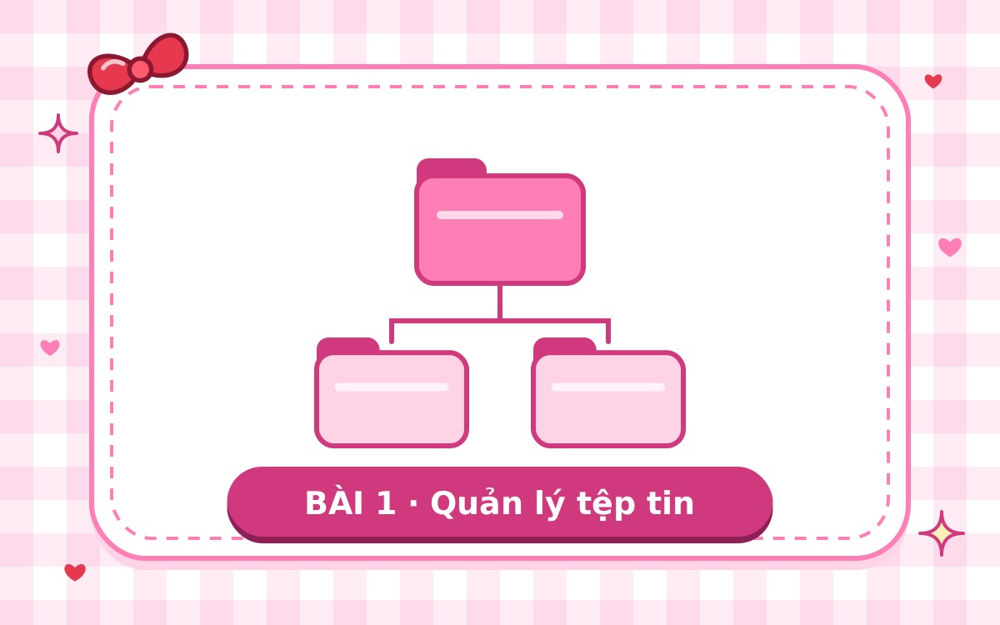
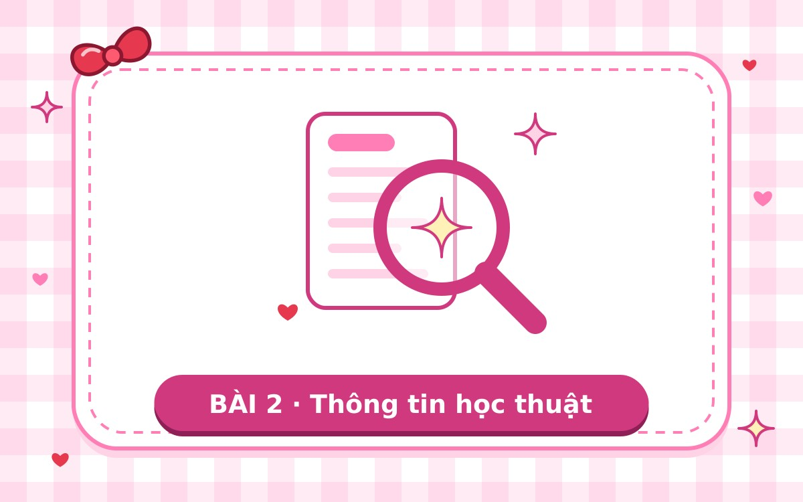
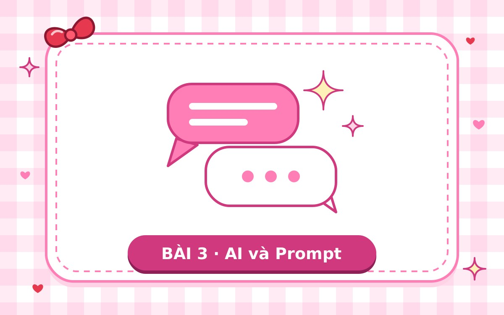
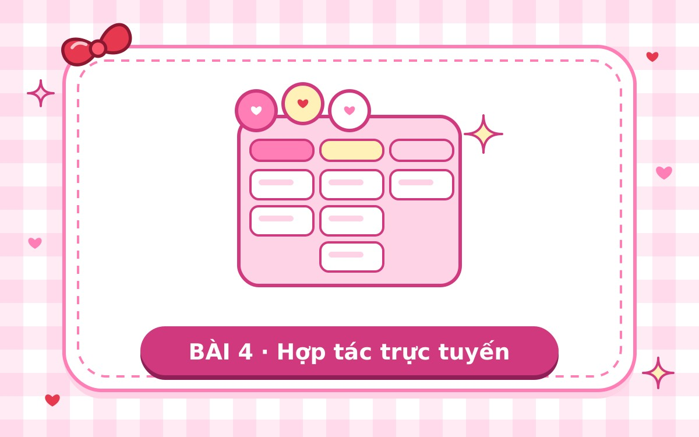
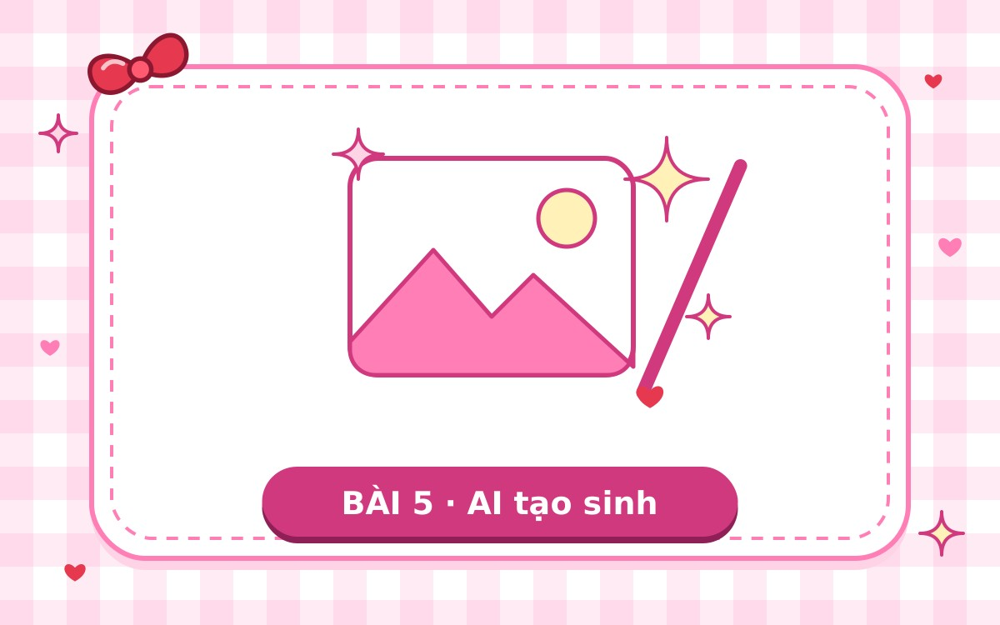
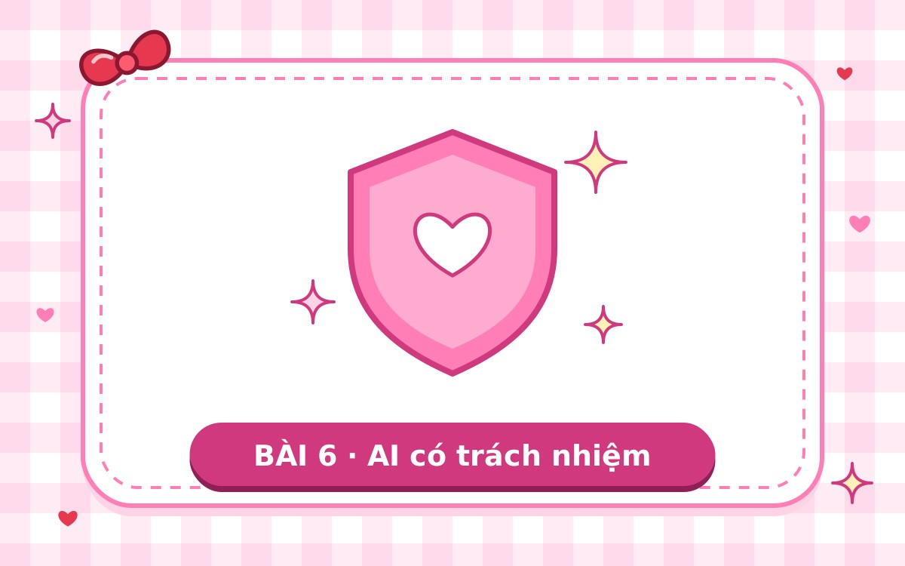

Dự án
Các bài tập mình đã làm trong môn học. Bấm vào từng thẻ để xem chi tiết.

Bài 1: Thao tác cơ bản với tệp tin và thư mục
Trình bày cấu trúc thư mục tối ưu, quy tắc đặt tên tệp và ảnh chụp minh họa.

Bài 2: Tìm kiếm và đánh giá thông tin học thuật
Tìm tài liệu học thuật bằng toán tử nâng cao và lập bảng đánh giá nguồn tin.

Bài 3: Viết Prompt hiệu quả cho các tác vụ học tập
So sánh Prompt ban đầu với Prompt cải tiến cùng kết quả AI trả về.

Bài 4: Sử dụng công cụ hợp tác trực tuyến cho dự án nhóm
Dùng công cụ quản lý dự án nhóm và ghi lại cách phối hợp trực tuyến.

Bài 5: Sử dụng AI tạo sinh để hỗ trợ sáng tạo nội dung
Tạo sản phẩm nội dung số (hình ảnh, video hoặc bài viết) có AI hỗ trợ.

Bài 6: Sử dụng AI có trách nhiệm trong học tập và nghiên cứu
Xây dựng bộ nguyên tắc cá nhân khi dùng AI có trách nhiệm trong học tập.